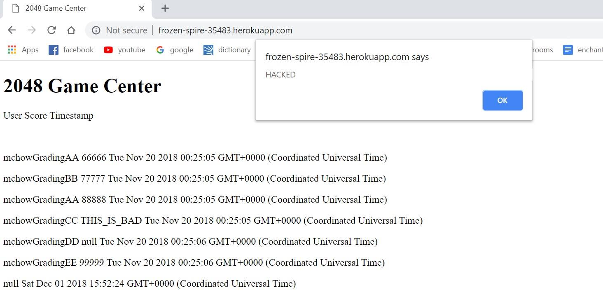
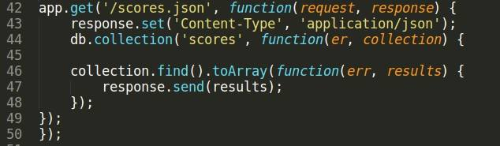

Meghan O'Brien
The product I am inspecting is a game server that stores and displays the high scores for a 2048 game. My goal is to find and take advantage of security vulnerabilities in the program.
After reading about different types of vulnerabilities and how to exploit them, I read through the code I was given to see if I could find any obvious poor programming practice or opportunities for security issues. The only tool that I used was curl, which I used to submit data to the server.
Due to a vulnerability that put no restrictions on user input, I was able to enter script to create an alert pop-up upon opening the page, instead of entering a username. Because the program was originally unfinished and not fully functional, I could not put malicious input in the query string, and no other privacy issues were found.
This was allowed on the submit page, because I was able to enter script instead of text when entering data through curl.
This issue is fairly severe, because, with no restriction on user input, the user could have sent very malicious code into the program and caused a lot of damage. Cross-site scripting is also dangerous because it introduces this malicious content to all users who visit the page, which means the effect could be widespread.
I found this problem by noticing that there was no code to edit or restrict the username, that is taken in directly from the user and sent into the database. I tested the problem by entering script as the username when submitting data with curl.
Here is a screenshot of the result:

This problem can be avoided in the future by adding restrictions on user input, such as code that removes extraneous characters from input or limits the character length of the input. The following line of code could have accomplished this:
username.replace(/[^\w\s]/gi, ' ');
I was actually not able to inject code using the query string, but this is not a result of good programming practice or preventative measures. It is simply because the original program was unfinished, and so the portion of the assignment that takes in a query string (for scores.json) was not written. Therefore, no input in the query string would have had an effect on the game server. Here is a screenshot of the scores.json route for reference:

I was not able to find many security issues, because many of the vulnerabilities that I learned how to take advantage of did not apply to this program. There are ways to bypass restrictions on user input and circumvent security measures, but no such measures were in place to begin with, so these actions were not relevant. Without making use of the query string, I could not conduct a SQL injection via query string, and there were also no hidden fields used that could have been manipulated. I was able to use cross-site scripting to send unchecked code into the program, which exposes all users to my manipulation.
I used the class notes to complete this assignment, and copied the line of code to remove extra characters from the nodemongoapp example on the COMP20 github.